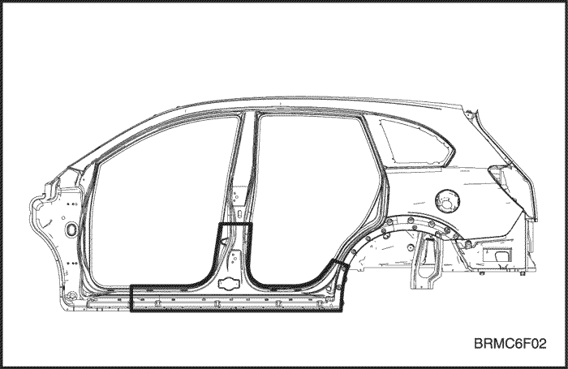
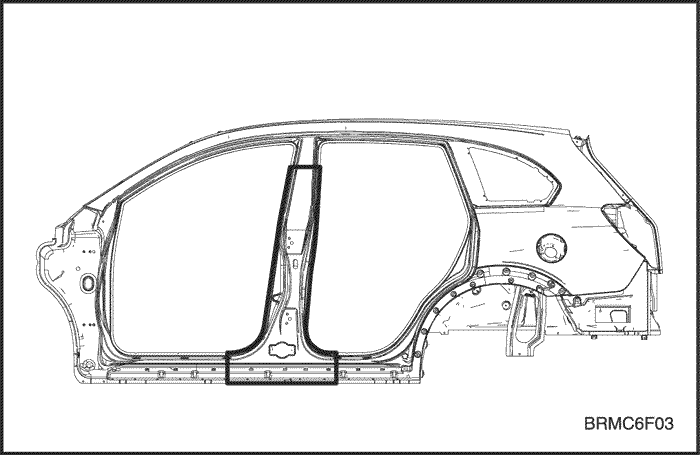
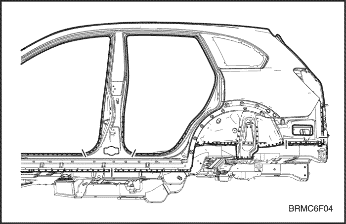
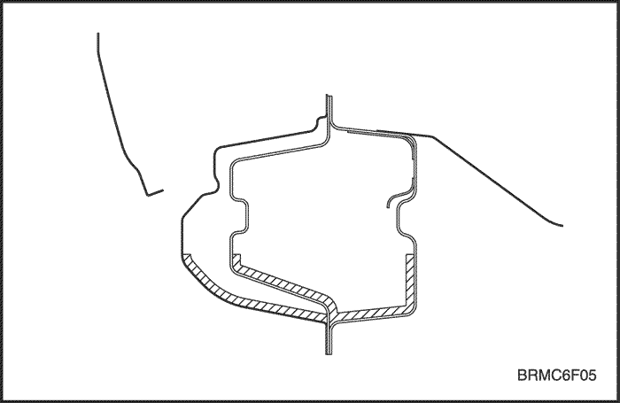
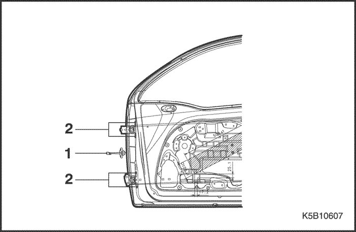
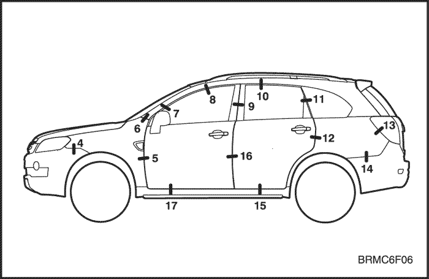
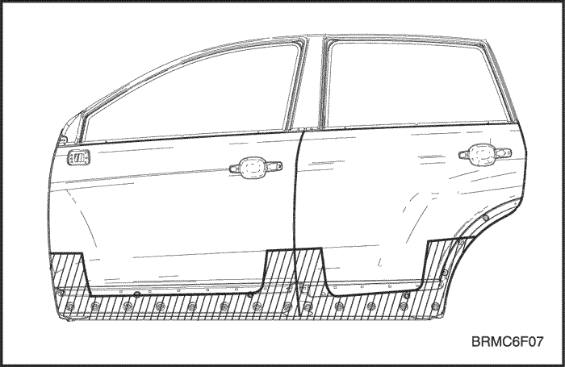
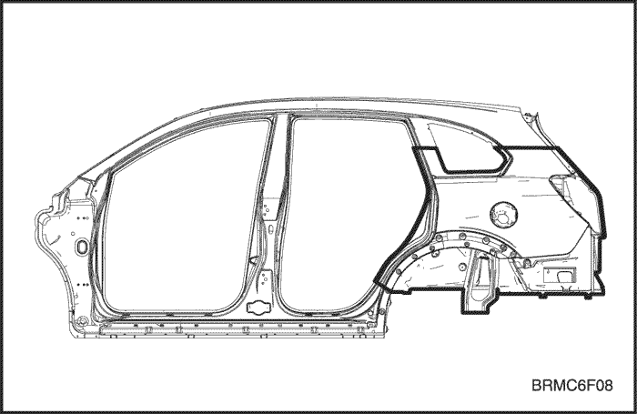
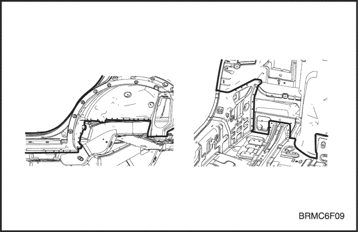

ВНУТРЕННЯЯ ПАНЕЛЬ БОКОВИНЫ, ДВЕРЬ И НАРУЖНАЯ ПАНЕЛЬ БОКОВИНЫ
ВНУТРЕННЯЯ ПАНЕЛЬ БОКОВИНЫ
ОБЩЕЕ ОПИСАНИЕ
- Герметизация точечной сварки
Внутренняя
панель боковины состоит из каркаса проема двери и боковой внешней
части. Она служит основанием для передней и задней дверей и других
частей и поддерживает жесткость дверей и крыши. Внутреннюю панель
боковины следует, в зависимости от степени повреждения, по возможности
ремонтировать, а не менять. Ремонт производится путем вытягивания.
ПРОЦЕДУРА РЕМОНТА
- Снимите соответствующие части.
- Двери.
- Уплотнители, обивки стойки и связанные с ними части.
- Ковровое покрытие.
- Узел ремня безопасности
- Выключатель двери и жгут проводов.
- Топливопровод и тормозная магистраль.
- Другие соответствующие детали.
- Вытяните и выправьте поврежденные места приблизительно до исходной формы.
- Повреждение может распространяться на внутренний каркас крыши, внутреннюю панель боковины и пол. Сначала определите степень повреждения, чтобы можно было правильно вытянуть панель.
- Вытяните и выправьте поврежденные места.
- Не вытягивайте больше нужного.
- Отрежьте и отделите внутреннюю панель боковины.
- Проверьте повреждение внутренней панели боковины, затем отрежьте новую панель боковины так, чтобы она перекрывала на 30 мм (1,18 in.) переднюю и заднюю стойки.
- Отрежьте поврежденную область ручной ножовкой по жирной линии, показанной на рисунке.
- Если повреждение распространяется на центральную стойку, отрежьте ее, как показано на рисунке.
- Накерните точки вокруг точек сварки на сварочной кромке.
- Специальным инструментом высверлить отверстия в сварных точках.
- Пневматическим зубилом отделите внутреннюю панель боковины, оставив на месте сварочные кромки.
- Отрихтуйте поврежденные смежные части.
- Заварите высверленные отверстия.
- С помощью молотка и оправки отрихтовать поврежденные участки оставшейся части внутренней панели и выровнять сварочные кромки.
- Выровняйте и зашлифуйте неровности от оторванных сварных точек дисковой шлифовальной машиной.
- Перед сваркой удалите краску и грунтовочное покрытие с обеих сторон свариваемой кромки.
- Установите новую внутреннюю панель боковины.
- Дисковой шлифовальной машиной зачистите от краски до стального листа обе стороны привариваемых участков новой внутренней панели боковины.
- Закрепите новую панель зажимными устройствами.
- Временно прихватите зажатую секцию сваркой.
- Снимите зажимные устройства, временно установите крыло и двери и затем проверьте зазоры, различия уровней и внешний вид.
- Выполните основную сварку.
- Приварить переднюю и заднюю часть внутренней панели боковины и центральную стойку встык газовой сваркой или сваркой МИГ.
- Приварить внутреннюю панель боковины и центральную стойку точечной сваркой, как показано на рисунке.
- Сначала выполните пробную сварку и проверьте качество сварки.
- Увеличьте количество точек на 20% для свариваемых областей.
- Отшлифуйте места сварки.
- Выровняйте места газовой сварки или сварки МИГ дисковой шлифовальной машиной, затем аккуратно, чтобы не деформировать, выровняйте выступающие места молотком.
- С помощью молотка и оправки выровнять приваренные точечной сваркой кромки так, чтобы они плотно прилегали к внутренней панели боковины.
- Выровнять деформированные места и различия в уровне сваренных участков с помощью припоя или шпаклевки и зашлифуйте.
- Наложите герметизирующую ленту. См. раздел 9, "Уплотнение, замазка и шумоизоляция".
- Наложите герметизирующую ленту на смежные поверхности пола и внутренней панели боковины.
- Нанесите грунтовочное покрытие. См. раздел 10, "Предупреждение коррозии".
- Нанесите грунтовочное покрытие на передний пол.
- Нанесите краску.
-
Внимание! При нанесении лакокрасочных покрытий обеспечьте вентиляцию. Большинство лакокрасочных материалов содержат вредные при вдыхании или проглатывании вещества. Прежде чем открывать емкость с лакокрасочным материалом, прочесть этикетку.Внимание! Избегайте контакта с кожей. При окраске использовать респиратор установленного образца, перчатки, средства защиты глаз и соответствующую одежду.Внимание! Лакокрасочные материалы огнеопасны. Хранить их в безопасном месте, беречь от искр и огня, не курить.
- Нанесите антикоррозионные средства. См. раздел 10, "Предупреждение коррозии".
- Нанесите антикоррозионные средства на внутреннюю часть внутренней панели боковины в достаточном количестве.
- Установите соответствующие детали.
- Очистите пассажирский салон.
- Жгут проводки и связанные с ним части.
- Узел ремня безопасности и ковровое покрытие.
- Обивка и уплотнители.
- Дверь и др.
- Установка производится в порядке, обратном снятию.
- Проверка и регулировка.
- Проверьте зазоры и различия уровней.
- Проверьте открывание и закрывание замка двери.
- Осмотрите пассажирский салон на предмет протечек.
Примечание: Снимать в зависимости от того, какая часть повреждена.
Примечание: Накройте несгораемыми защитными чехлами окрашенные участки, сиденья, ковровые покрытия и другие части.
Примечание: Соблюдать осторожность, чтобы не разрезать внутреннюю панель. Это может потребовать дополнительного ремонта.



Примечание: Высверливая отверстия, соблюдать осторожность, чтобы не просверлить внутреннюю панель.
Внимание! Во избежание травм глаз надевайте защитные очки при шлифовке, резке или полировке.
Внимание! Во избежание травм глаз и ожогов пользуйтесь при сварке каской, рукавицами и защитной обувью установленного образца.
Внимание! Во избежание травм глаз и ожогов пользуйтесь при сварке каской, рукавицами и защитной обувью установленного образца.
Внимание! Во избежание травм глаз и ожогов пользуйтесь при сварке каской, рукавицами и защитной обувью установленного образца.

Внимание! Во избежание травм глаз надевайте защитные очки при шлифовке, резке или полировке.

ДВЕРЬ
ПРОЦЕДУРА РЕМОНТА
- Снимите соответствующие части.
- Обивка двери и связанные с ней части.
- Жгут проводов и электромагнитный клапан.
- Стекло и стеклоподъемник.
- Тяги, узел замка и ручка.
- И т.д.
- Снимите дверь.
- Удалить болт из петли дверного механизма (1) и удалить четыре болта (2) из двери в сборе.
- Подготовка новой двери.
- Подготовьте новую дверь и проверьте поврежденные места.
- Предварительно установите дверь.
- Установите четыре болта.
- Проверьте и отрегулируйте зазоры и различия уровней дверей, крыла, стойки, крыши и наружных панелей боковины.
- Проверьте, нет ли деформаций.
- Снимите новую дверь.
- Выньте четыре болта из двери в сборе.
- Нанесите краску.
- ПРЕДОСТОРОЖНОСТЬ
- При нанесении лакокрасочных покрытий обеспечьте вентиляцию. Большинство лакокрасочных материалов содержат вредные при вдыхании или проглатывании вещества. Прежде чем открывать емкость с лакокрасочным материалом, прочесть этикетку.
- Избегайте контакта с кожей. При окраске используйте респиратор установленного образца, перчатки, средства защиты глаз и соответствующую одежду.
- Лакокрасочные материалы огнеопасны. Хранить их в безопасном месте, беречь от искр и огня, не курить.
- Нанесите антикоррозионные средства.
- Нанесите антикоррозионные средства на внутренние поверхности нижних частей.
- Установите дверь.
- Закрепите дверь четырьмя болтами.
- Установите тяги механизма закрывания двери и закрепите болтом.
- Проверьте зазоры и различия уровней.
- Установите соответствующие детали.
- Ручка, тяги и узел замка.
- Стекло и стеклоподъемник.
- Электромагнитный клапан и жгут проводов.
- Установите обивку двери и другие детали.
- Проверка и регулировка.
- Проверьте зазоры и различия уровней.
- Проверьте открывание и закрывание замка двери.
- Осмотрите пассажирский салон на предмет протечек.
- Установите обивку двери и другие детали.
Примечание: Осмотрите и отберите годные части.



Примечание:
Прежде чем устанавливать обивку двери и связанные с ней части, нанесите
консистентную смазку на движущиеся части и проверьте работу всех
механизмов.
НАРУЖНАЯ ПАНЕЛЬ БОКОВИНЫ
ОБЩЕЕ ОПИСАНИЕ
Наружная
панель боковины состоит из боковой наружной части и каркаса проема
двери. Боковая наружная часть является заметной составляющей внешнего
облика автомобиля. Это особенно касается линии кузова, продолжающей
дверь. На это следует обратить особое внимание при ремонте. Эта деталь
должна быть выровнена относительно задней двери, двери багажника,
заднего стекла и других частей.
ПРОЦЕДУРА РЕМОНТА
- Снимите соответствующие части.
- Обивка задней части и двери багажника.
- Задние комбинированные фонари и жгут проводов.
- Задний бампер и связанные с ним детали.
- Задний ремень безопасности и заднее сиденье.
- Части шасси и топливной системы.
- Другие соответствующие детали.
- Вытяните и выправьте поврежденные места приблизительно до исходной формы.
- Прикрепить автомобиль к правильному стенду с помощью нижних захватов, расположенных в четырех обозначенных точках крепления.
- Прежде чем отрезать поврежденные части, вытяните их до первоначальной формы.
- Не вытягивайте больше нужного.
- Вытяните и выправьте поврежденные участки задней боковой наружной панели, боковой внутренней панели и внутренней части колесной арки.
- Отрежьте и отделите наружную панель боковины.
- Ножовкой и ножницами аккуратно отрезать заднюю стойку и наружную часть панели боковины (задняя часть панели боковины) по жирным линиям, как показано ниже на рисунке.
- Накерните точки вокруг точек сварки на задней панели, внутренней панели боковины и колесной арке.
- Специальным инструментом высверлить отверстия в сварных точках на задней части наружной панели боковины.
- Отрезать панель от кузова пневматическим зубилом, оставив на месте сварочные кромки на внутренней боковой панели, внутренней части колесной арки и панели задка.
- Выровняйте и зашлифуйте неровности от оторванных сварных точек молотком на оправке и зашлифуйте дисковой шлифовальной машиной.
- Отрихтуйте поврежденные смежные части.
- Заварите высверленные отверстия.
- С помощью молотка и оправки отрихтовать поврежденные участки оставшейся части внутренней панели и выровнять сварочные кромки.
- Перед сваркой удалите краску и грунтовочное покрытие с обеих сторон свариваемой кромки.
- Установите новую наружную панель боковины.
- Ручной ножовкой отрежьте новую наружную панель боковины так, чтобы она перекрывала на 30 мм (1.18 in.) каркас проема двери.
- Дисковой шлифовальной машиной зачистите от краски до стального листа обе стороны привариваемых участков подготовленной наружной панели боковины.
- Закрепите новую панель зажимными устройствами.
- Временно прихватите зажатую секцию сваркой.
- Снять зажимные устройства, временно установить дверь багажника и двери и затем проверить зазоры, различия уровней и внешний вид.
- Выполните основную сварку.
- Приварите внутреннюю панель боковины и стойку в местах стыка газовой сваркой или сваркой МИГ.
- Приварите кромки и надколесную дугу наружной панели боковины, как показано на рисунке.
- Сначала выполните пробную сварку и проверьте качество сварки.
- Увеличьте количество точек на 20% для свариваемых областей.
- Отшлифуйте места сварки.
- Выровняйте места газовой сварки или сварки МИГ дисковой шлифовальной машиной, затем аккуратно, чтобы не деформировать, выровняйте выступающие места молотком.
- С помощью молотка и оправки выровнять приваренные точечной сваркой кромки так, чтобы они плотно прилегали к наружной панели боковины.
- Выровнять деформированные места и различия в уровне сваренных участков с помощью припоя или шпаклевки и зашлифуйте.
- Наложите герметизирующую ленту. См. раздел 9, "Уплотнение, замазка и шумоизоляция".
- Наложить герметизирующую ленту на места соединения накладки, нижней части панели задка, окрестность задних комбинированных фонарей и наружной панели боковины.
- Нанесите грунтовочное покрытие. См. раздел 10, "Предупреждение коррозии".
- Нанесите грунтовочное покрытие на заднюю колесную арку и обозначенную часть заднего пола.
- Нанесите краску.
-
Внимание! При нанесении лакокрасочных покрытий обеспечьте вентиляцию. Большинство лакокрасочных материалов содержат вредные при вдыхании или проглатывании вещества.Внимание! Прежде чем открывать емкость с лакокрасочным материалом, прочесть этикетку.Внимание! Избегайте контакта с кожей. При окраске использовать респиратор установленного образца, перчатки, средства защиты глаз и соответствующую одежду.Внимание! Лакокрасочные материалы огнеопасны. Хранить их в безопасном месте, беречь от искр и огня, не курить.
- Нанесите антикоррозионные средства.
- Нанесите антикоррозионные средства на внутреннюю часть внутренней панели боковины в достаточном количестве.
- Установите соответствующие детали.
- Очистите пассажирский салон.
- Жгут проводки и связанные с ним части.
- Узел ремня безопасности и ковровое покрытие.
- Обивка и уплотнители.
- Дверь и др.
- Установка производится в порядке, обратном снятию.
- Проверка и регулировка.
- Проверьте зазоры и различия уровней.
- Проверьте открывание и закрывание замка двери.
- Осмотрите пассажирский салон на предмет протечек.
Внимание!
Не курите при работе вблизи топливной системы. Берегите топливную
систему от открытого огня. При необходимости снимите топливный бак и
отходящие трубопроводы.
Примечание: Проверьте открывание и закрывание замка задней двери.

Примечание: Высверливая отверстия, будьте осторожны, чтобы не просверлить внутреннюю боковую панель и заднюю панель.
Внимание! Во избежание травм глаз надевайте защитные очки при шлифовке, резке или полировке.
Внимание! Во избежание травм глаз и ожогов пользуйтесь при сварке каской, рукавицами и защитной обувью установленного образца.
Внимание! Во избежание травм глаз и ожогов пользуйтесь при сварке каской, рукавицами и защитной обувью установленного образца.
Внимание! Во избежание травм глаз и ожогов пользуйтесь при сварке каской, рукавицами и защитной обувью установленного образца.

Внимание! Во избежание травм глаз надевайте защитные очки при шлифовке, резке или полировке.